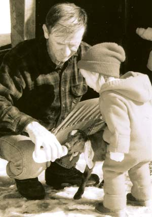
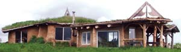
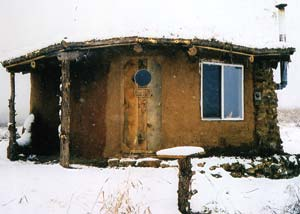
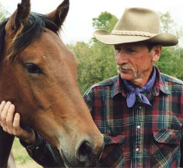
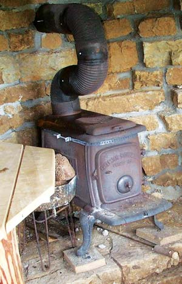
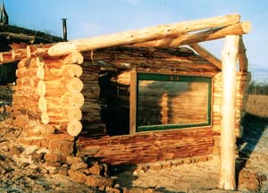
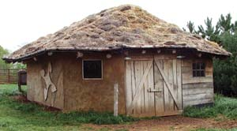
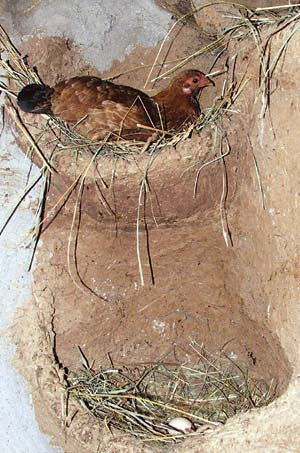
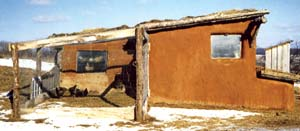

Every day is a new adventure on this handcrafted homestead.
A growing number of people want to simplify their lives. I am one of those people.
I’m a 60-year-old subsistence farmer from Wisconsin, where I was born and raised on a dairy farm. I spent many years as a packer, or stock manager, for the Forest Service in Idaho, working with the mules and horses that carry people and supplies up into the mountains. But Wisconsin is where all my family lives, so I left the Forest Service a few years ago to move back here and live near my grandkids.
My adventure in homesteading began about four years ago, when I decided to make some changes in my life to reconnect with Mother Earth. The one thing I owned was a 12-acre hayfield near Elroy, Wis., so I went out to the field and sat in the tall grass. As I felt the cool earth below me and gazed at the expansive sky above, I began to imagine a dwelling, and then a homestead.
My idea of a homestead started with building a simple home out of native materials. I wanted an earth-friendly living structure, and my intuition said to build it round, like a Navajo hogan, so the energy could flow around it. I did not want any electricity or plumbing. I feel more at peace when not surrounded by electricity, and plumbing never made much sense to my way of thinking. I think outhouses are very practical because they don’t waste so much water.
I began the two-month project of creating a home by forming a circle of red cedar posts set upright in the ground. Next, I framed the roof by running logs wagon-wheel fashion from a center pole to the posts. I?set rough-sawn oak boards over these rafters. Then, on top of the boards, I put No. 30 felt paper and two layers of 6 mil black plastic. I cut blocks of sod - hunks of earth, with grass, intact roots and all - and put a 6-inch layer of sod over the plastic. Next came the real work of filling the area between the posts with blocks of sod. Because I’m on a hill and have a terrific view, I chose to have lots of windows, which cut down on the amount of sod I needed.
After laying the sod blocks, I applied three coats of cob - a clay and straw mixture - to the sod walls. Cob is wonderful stuff and can be molded into any shape imaginable, so I had a lot of fun being artistic. Now here I am in my home, which is about 200 square feet and looks like the hobbit houses that J.R.R. Tolkien wrote about in The Lord of the Rings. My house was built one handful at a time using basic hand tools, all for a cost of about $3 a square foot.
Over the past four years, I’ve added several buildings to my homestead. The first was a root cellar. When I moved in, I planted a big garden, about 60 feet by 150 feet, so I needed a place to store food - nothing fancy, just a hole in the ground. As I dug the hole for my root cellar, I pried limestone rocks out of the ground and saved them for later use. This “quarry” gave me stone for the walls of the root cellar and provided a solid support for the sod roof. Thanks to the Mother Earth News articles about how and why to build a root cellar, I now have a better way to keep cabbages and other produce fresh year-round.
Every homestead needs a shed of some sort, and that was my next project. I made this building in the shape of a rectangle by using old hay bales for the walls, then I applied three coats of cob to the bales. The bale construction was much faster than the sod and provides better insulation. I kept two goats in the shed all winter, and they stayed warm.
Somehow, I always manage to have chickens; they seem to be part of my life here on Earth. I needed to build a chicken coop, so I attached it to the shed and dug it partially into the hill. This, combined with the hay bale construction, made the coop very warm in the winter and cool in the summer. Because of this, my chickens laid eggs all winter long. My creative juices started flowing as I thought about nest boxes and a roost. I made the nest boxes using the cob mixture and placed them randomly around the walls to resemble swallows’ nests. I made roosts from tree branches glued to the walls with the cob. I’m sure my chickens have more fun than most because of their unique coop.
After two years, I wanted a little more room for my grandkids and other guests, so I built a 200-square-foot addition to the house. The hay bales worked so well for the shed that I used them again for the walls of my addition. In keeping with the hobbit house theme, I made the roof low and put a small rear door in the north wall. Two small windows to the west were mudded into the wall like portholes. All in all, it’s a very cozy room. Strawberries and clover grow on the roof, along with some wildflowers during the summer.
Next, I acquired a horse and a buggy; so then, of course, I needed a barn. I built the barn in an oblong shape, with stuccoed walls. Someday I will build a loft. I think a barn is the most magical place on a homestead. It’s a place to store feed, house animals and tell tales to the grandkids. Nothing is more magical than the lantern light that dances off the walls as I milk the goats. I love the music of milk splashing into the pail and the goats munching their grain. At these moments, it’s as though time has ceased to exist.
My next project was to build a clay oven for baking bread. I formed it in the shape of a turtle to honor Turtle Island, a name many people use for this place we live. It refers to a Native American legend that says the Earth was formed on the back of a turtle.
Building the oven was easier than baking with it. My first attempt at baking bread produced something that resembled a blackened moon rock. Now I know how to plan my cooking - I can bake bread, followed by a cake and still have enough heat for enchiladas. It’s definitely an asset to the homestead. Otherwise I cook in a Dutch oven on the woodstove or outside on a fire.
Finally, I felt the urge to build a sauna - winter in Wisconsin does that to a person. It’s my Florida vacation right here at home. I took some pines that my daughter wanted removed from her yard and used them for side walls. The rock from the root cellar became the two walls behind the stove. The floor is bedrock limestone, and the roof is sod. The sauna cost me about $50.
I think my homestead is complete now, but only time will tell.
My grandkids call my house “Grandpa’s mud hut,” and they are a joy when they come to visit. All the animals get extra attention from them, and I get plenty of help with the chores. Who could resist bottle-feeding the baby goats or riding in the buggy to visit neighbors? Of course, gathering eggs is always at the top of their list of things to do. Even household chores are fun, such as grinding wheat for animal-shaped pancakes or building a fire. It’s something different for them and a chance to learn about the Earth.
Just ask the grandkids, and they will tell you that potatoes taste better if you gather them with your own hands. The same is true for the taste of peas and carrots, wild berries or one of Grandpa’s chickens. Even the water tastes better when the kids have to work for it. I use an outdoor hand pump to get water, then heat it on the woodstove. The kids help me out when they visit, using teamwork at the pump handle. At the end of the day, they have no trouble falling asleep, sometimes even before Grandpa’s story is done and the candlelight fades away.
I’m interested in reviving strong rural communities. Bringing back the way we used to interact and rely on each other seems like something worth working toward. With my neighbors, it has been easy to start the process by exchanging items we need. My neighbor has wood; I have eggs, chickens and garden produce. Another neighbor needs help haying; I need hay. And on and on it goes. Lending a hand has become a habit around here.
Once a week during the summer, I hitch the horse and load the buggy with excess produce and eggs, and down the road we go. No neighbor gets passed by - even the ones who really hate zucchini. Everybody loves the fresh eggs, and they all seem to have enough time to talk a little and catch up on what the other neighbors are doing. I’ve found that old fences can be mended with a little communication. That’s what builds communities.
Each new day is an adventure here on my hilltop homestead. I eat fresher foods now and always have plenty. No longer is my focus on making money. I now concentrate my energy on the quality of my life, and I’m discovering true wealth. Chopping wood, pumping water and taking care of the animals are all hidden blessings, because the physical labor keeps me fit and out of the doctor’s office. I live in harmony with the natural world and its cycles, which suits me well.
Until recently, I felt I was a steward of this land, but since I’ve been living here I’ve come to feel that I am only a guest. I am just here as one of many participants, and my aim is not to dominate the land, but to live in harmony with it. And so I treat this land with the reverence and love it deserves.
|
 ANNA LANMAN Harvey Baumgartner and his granddaughter feed a baby goat. |
 HARVEY BAUMGARTNER Harvey Baumgartner built a simple house before expanding it with a straw bale addition. |
 HARVEY BAUMGARTNER Harvey Baumgartner built this simple house before expanding it with a straw bale addition. |
|
 RACHEL LARSON Harvey sometimes drives a truck, but he often gets around with old-fashioned horsepower. |
 HARVEY BAUMGARTNER This woodstove warms Harveys’ hand-built sauna. |
 HARVEY BAUMGARTNER This hand-built sauna provides welcome relief from the cold winters in Wisconsin. |
|
 HARVEY BAUMGARTNER Harvey’s straw-bale chicken coop. |
 HARVEY BAUMGARTNER The cob nesting boxes for the chickens were designed to resemble swallows’ nests. |
 HARVEY BAUMGARTNER The cob walls of this barn include hand-sculpted details. |